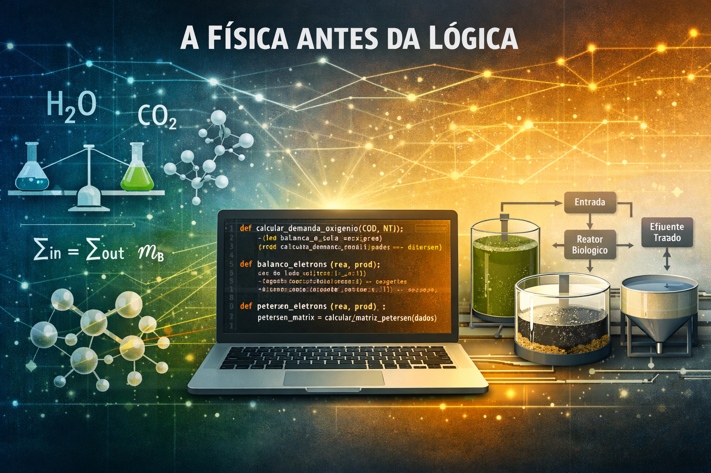

A Física Antes da Lógica

Como a física e a química fundamentam o código: a filosofia de desenvolvimento que transformou um simulador de efluentes em um modelo cientificamente soberano
Há uma diferença fundamental entre escrever código que funciona e escrever código que reflete a realidade. A primeira é programação. A segunda é engenharia. E essa diferença se torna visível quando você desenvolve um simulador de processos químicos e biológicos: cada linha de código precisa respeitar leis que existiam muito antes de qualquer linguagem de programação.
Eu sou formado em engenharia química. Passei anos estudando balanços de massa, cinética de reações, termodinâmica. Depois, virei desenvolvedor. E descobri que a maioria dos desenvolvedores não entende – ou não precisa entender – a física por trás do que estão modelando. Eles escrevem código que produz resultados, mas não código que respeita a conservação de massa, o balanço de elétrons, ou as leis da termodinâmica.
Isso não é um julgamento. É uma observação. E é também a razão pela qual desenvolvi o Simulador de Efluentes: para provar que código pode ser cientificamente soberano. Que pode ser baseado em princípios fundamentais, não em aproximações empíricas. Que pode ser exato, não apenas "funcional".
O Problema das Aproximações
Quando você desenvolve um sistema de simulação, há uma tentação natural: usar fórmulas simples. Fórmulas que "funcionam na maioria dos casos". Fórmulas que são rápidas de implementar e fáceis de explicar.
No tratamento de efluentes, a fórmula mais comum é: Demanda de O₂ = 1.42 × DBO. É uma aproximação empírica. Funciona? Sim, na maioria dos casos. É exata? Não. É baseada em correlações estatísticas, não em princípios fundamentais.
E essa diferença importa. Porque quando você dimensiona uma estação de tratamento de efluentes (ETE) usando aproximações, você pode estar superdimensionando ou subdimensionando o sistema. Você pode estar desperdiçando energia ou, pior, lançando efluente não tratado no rio.
Eu vi isso acontecer. Vi projetos que usavam fórmulas simplificadas e descobriam, depois de meses de operação, que o sistema não atendia aos requisitos. Vi engenheiros que confiavam em "valores típicos" e descobriam que a realidade era diferente.
E então decidi: meu simulador não seria assim. Meu simulador seria baseado em física, não em correlações. Seria baseado em balanço de elétrons, não em aproximações. Seria cientificamente soberano.
A Matriz de Petersen: Quando a Física Encontra o Código
A Matriz de Petersen é uma estrutura matemática que organiza processos biológicos em uma matriz estequiométrica. É baseada no modelo ASM1 (Activated Sludge Model 1), padrão internacional para modelagem de lodos ativados.
Mas o que torna a Matriz de Petersen especial não é apenas sua base científica. É o fato de que ela garante, matematicamente, a conservação de elétrons. E isso torna o cálculo da demanda de oxigênio exato, não aproximado.
Na prática, isso significa:
- Balanço de Elétrons:
Elétrons no Substrato = Elétrons na Biomassa + Elétrons no O₂ - Conservação de Massa:
Massa que entra = Massa que sai + Massa acumulada(Lavoisier) - Modelo de Monod: Considera limitação simultânea por substrato e oxigênio
- Decaimento e Respiração Endógena: Inclui o consumo de O₂ pela morte natural das bactérias
Quando implementei a Matriz de Petersen no código, não estava apenas adicionando uma funcionalidade. Estava garantindo que cada cálculo respeitasse leis físicas imutáveis. Estava transformando aproximações em exatidão.
"O cálculo de O₂ agora é EXATO porque respeita o balanço de elétrons,
não sendo uma aproximação empírica. O sistema alcançou soberania científica."Física Antes da Lógica: A Filosofia
A filosofia "Física antes da Lógica" significa que, antes de escrever qualquer função, você precisa entender completamente o fenômeno físico que está modelando. Você precisa entender:
- O que acontece: Quais são os processos físicos e químicos envolvidos?
- Por que acontece: Quais são as leis fundamentais que governam esses processos?
- Como quantificar: Quais são as equações que descrevem matematicamente esses processos?
Só então você escreve o código. Porque o código é apenas a tradução da física para uma linguagem que o computador entende. Se você não entende a física, o código será apenas uma tradução errada.
Exemplo: O Balanço de Massa
No tratamento de efluentes, tudo começa com o balanço de massa. É o princípio de conservação de Lavoisier: Massa que entra = Massa que sai + Massa acumulada + Massa consumida.
Antes de escrever qualquer função de cálculo, eu preciso entender esse balanço. Preciso entender que:
- O substrato (DBO) que entra no reator é consumido pelas bactérias
- Parte desse substrato vira biomassa (novas bactérias)
- Parte é oxidada para fornecer energia (consome O₂)
- As bactérias também morrem naturalmente (decaimento) e consomem O₂ na respiração endógena
Só depois de entender essa física é que escrevo o código. E o código, então, não é apenas uma fórmula – é uma representação fiel do processo físico.
Exemplo: A Validação Termodinâmica
Uma das primeiras coisas que implementei no simulador foi a validação de consistência termodinâmica. O sistema bloqueia cálculos com dados fisicamente impossíveis:
- DBO > DQO: Impossível. A parte (DBO) não pode ser maior que o todo (DQO).
- pH < 2.0 ou pH > 12.0: Fora da faixa de sobrevivência da biomassa.
- Vazão ≤ 0: Fluxo de massa requer vazão positiva.
Isso não é apenas "validação de entrada". É física. É garantir que o sistema não calcule resultados que violam leis fundamentais. É prevenir o "Garbage In, Garbage Out" (GIGO) não apenas no nível de dados, mas no nível de consistência física.
O Código como Tradução da Física
Quando você desenvolve seguindo "Física antes da Lógica", o código se torna uma tradução direta da física. Cada função corresponde a um processo físico. Cada variável representa uma grandeza física real. Cada equação é uma lei física expressa em código.
No simulador de efluentes:
calcular_demanda_oxigenio()não é apenas uma função – é o balanço de elétrons implementadodimensionar_reator()não é apenas um cálculo – é a relação F/M (Food-to-Microorganism) aplicadacalcular_recirculacao()não é apenas uma fórmula – é o balanço de massa no sistema de lodovalidar_conformidade()não é apenas uma checagem – é a verificação contra normas ambientais (CONAMA 430/2011)
E quando você implementa a Matriz de Petersen, você não está apenas adicionando um "método alternativo". Você está implementando um modelo dinâmico que resolve equações diferenciais, que considera evolução temporal, que permite análise de transiente. Você está implementando física pura, traduzida para código.
A Soberania Científica
Há uma diferença entre usar uma fórmula porque "é assim que se faz" e usar uma fórmula porque você entende a física por trás dela. A primeira é dependência. A segunda é soberania.
Quando você desenvolve baseado em física, você não depende de "valores típicos" ou "correlações empíricas". Você depende de leis fundamentais que não mudam. Você depende de princípios que são verdadeiros independentemente de quem os descobriu ou quando foram descobertos.
O simulador de efluentes alcançou soberania científica quando implementei a Matriz de Petersen. Porque agora o cálculo de O₂ não é uma aproximação – é exato. Porque agora o modelo não é estático – é dinâmico. Porque agora o sistema não depende de correlações empíricas – depende de balanço de elétrons.
E isso importa. Porque quando você dimensiona uma ETE usando o simulador, você não está apenas "rodando um programa". Você está aplicando princípios fundamentais da engenharia química. Você está garantindo que o sistema respeita leis físicas imutáveis.
O Custo da Exatidão
Mas há um custo. Desenvolver baseado em física é mais difícil. É mais lento. Requer mais conhecimento. Requer que você entenda não apenas programação, mas também engenharia química, termodinâmica, cinética de reações.
E ainda assim, vale a pena. Porque quando você desenvolve assim, você cria código que não apenas funciona – você cria código que é verdadeiro. Código que reflete a realidade dos processos físicos. Código que pode ser confiado não apenas por desenvolvedores, mas por engenheiros.
No simulador de efluentes, cada cálculo pode ser rastreado até uma lei física. Cada resultado pode ser validado contra princípios fundamentais. Cada função pode ser explicada não apenas em termos de código, mas em termos de física.
Um Roadmap para Outros
Se você desenvolve sistemas que modelam processos físicos, químicos ou biológicos, há lições que pode aprender:
1. Entenda a física primeiro: Antes de escrever código, entenda completamente o fenômeno físico que está modelando. Leia a literatura científica. Entenda as leis fundamentais.
2. Valide contra princípios: Não aceite resultados apenas porque "o código rodou". Valide contra leis físicas. Verifique conservação de massa, balanço de energia, consistência termodinâmica.
3. Prefira exatidão a aproximação: Quando possível, use modelos baseados em princípios fundamentais, não em correlações empíricas. A exatidão pode ser mais difícil de implementar, mas é mais confiável.
4. Documente a física: Documente não apenas o código, mas também a física por trás dele. Explique as leis, as equações, os princípios. Isso ajuda outros a entenderem e validarem.
5. Teste contra a realidade: Valide seus modelos contra dados experimentais. Compare com resultados de sistemas reais. A física deve refletir a realidade.
Conclusão: Código que Respeita a Física
Desenvolver seguindo "Física antes da Lógica" não é apenas uma metodologia. É uma filosofia. É a crença de que código deve refletir a realidade, não apenas produzir resultados. É a crença de que exatidão importa mais que conveniência. É a crença de que soberania científica é possível, mesmo em um mundo dominado por aproximações.
O simulador de efluentes é uma prova de conceito. Prova que código pode ser cientificamente soberano. Prova que modelos dinâmicos baseados em balanço de elétrons são possíveis. Prova que "Física antes da Lógica" não é apenas uma frase bonita – é uma forma de desenvolver que produz código verdadeiro.
E talvez, apenas talvez, seja um roadmap não apenas para simuladores, mas para qualquer sistema que modele processos físicos. Porque se um engenheiro químico pode desenvolver código que respeita balanço de elétrons, talvez outros profissionais também possam desenvolver código que respeita as leis fundamentais de suas áreas.
A física existe há bilhões de anos. As linguagens de programação existem há décadas. Talvez seja hora de fazer o código respeitar a física, não o contrário.
Escrito por um engenheiro químico que virou desenvolvedor, desenvolvendo sistemas que respeitam as leis da física antes de qualquer lógica de programação. O Simulador de Efluentes está disponível no GitHub e demonstra que código pode ser cientificamente soberano.